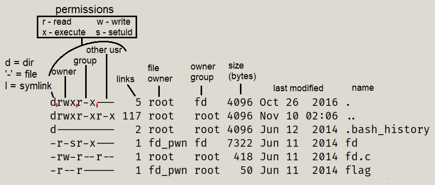

list folders and files in the current dir
-la (list) all
-a all
file types:- – : regular file
- d : directory
- c : character device file
- b : block device file
- s : local socket file
- p : named pipe
- l : symbolic link

a folder mush be executable in order to touch its content, making a folder and changing group to r+w will not have any effect
the owner group premission are affected by the rwx of the group
setuid - the setuid/setguid permissions are used to tell the system to run an executable as the owner with the owner’s permissions.
in the example above, the file fd if owned by fd_pwn, and group owner is fd, in the group permission it has x, and in the owner permission s,
meaning, the user fd can execute the file fd as the owner (fd_pwn)
It's possible for a file to be setuid but not executable; this is denoted by capital S, where the capital S alerts you that this setting is probably wrong because the setuid bit is (almost always) useless if the file is not executable.